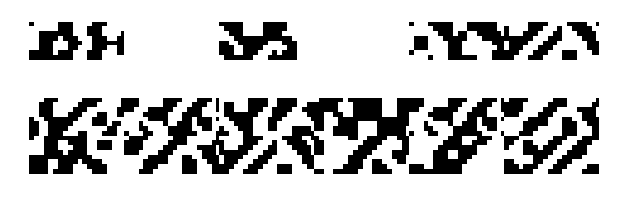
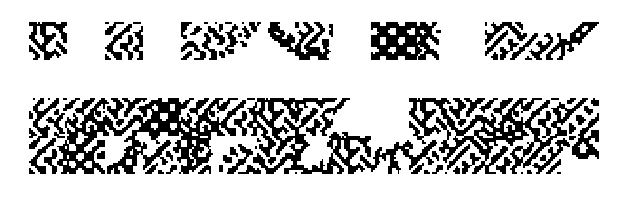
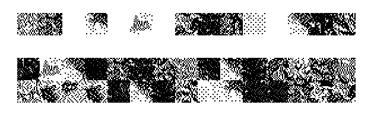
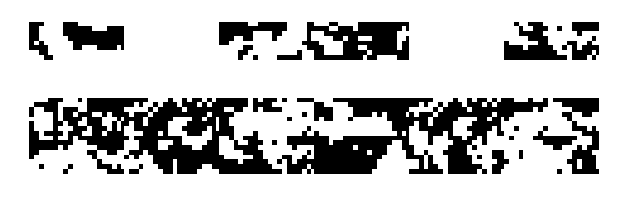
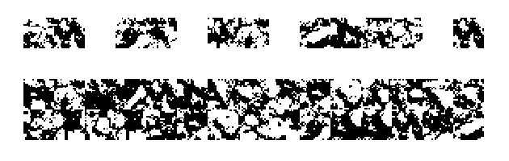
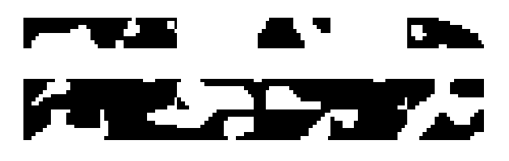
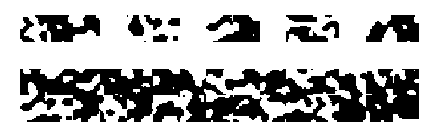

|
CRUNCH NOISE FONTS |
|
ZZZ PROMETHEUS:   DOWNLOAD: ⏵ Full font family (.zip) ⏵ ZZZ Prometheus 1 | Reverse ⏵ ZZZ Prometheus 1 Non-Monogamous ⏵ ZZZ Prometheus 2 | Reverse Bonus for power users: Prometheus 1 has a bonus quality-of-life feature baked in where all of the glyphs that are only HALF-filled with noise are all mapped to the the number and symbol keys. These follow a convention on many PC keyboards -- left-heavy gylphs are found on the left side of the keyboard, likewise for the right. The middle numbers are top-heavy, and the middle symbols are bottom-heavy. This might not perfectly line up with your keyboard layout though, I simply mapped it according to my own keyboard lol. ZZZ PRAWN:  DOWNLOAD: ⏵ Full font family (.zip) ⏵ ZZZ Prawn | Reverse ZZZ STONY TONY:   DOWNLOAD: ⏵ Full font family (.zip) ⏵ ZZZ Stony Tony 1 | Reverse ⏵ ZZZ Stony Tony 2 | Reverse ZZZ TWO-TAKE TONY:   DOWNLOAD: ⏵ Full font family (.zip) ⏵ ZZZ Two-Take Tony 1 | Reverse ⏵ ZZZ Two-Take Tony 2 | Reverse |
|
FREQUENTLY ASKED QUESTIONS |
|
1. What is this???? These are font files I made (using this program) ... but instead of letters, all the individual glyphs are random different chunks of pixelated noise/texture. So for example, look at this image: This long strip of crunchy noise was made by typing the word "Crunch" with the font set to "ZZZ Prometheus 1". Each letter/number/symbol typed yields one "brick" or chunk of texture. You can see them broken down here: In most of these fonts, each character you type will be the same exact width (aka, they're monospace fonts). So, essentially, just open a graphic editing program or word processor, change the font to one of PK's signature crunch fonts, and use your keyboard to generate crunchy noise textures! 2. But what do I do with them??? They can be used to make weird art -- either to build abstract structures, make little guys, quickly generate large fields of texture, or whatever other weird stuff you can think of! Do weird stuff to em! Stack em! Overlap em! Kern em! Italic em! Distort em! Whatever your heart desires! They were designed with hard pixel in mind -- so turning OFF anti-aliasing (if you can) is preferred but not required. Technically you don't even need a graphics editing program to use them, you can make art right in Notepad or a word processor I assume! By default most of them are monospaced so you can approach them similarly to how one might approach ASCII art or pixel art. ... Or at least, making art with them is why I made them (and for the fun hobbyist aspect) but maybe you'll have some kind of other cool idea for something to do with them!! After all, I started making these by using a program for a purpose it probably wasn't ever intended for! You could do the same! 3. This is kind of a lot... where should I start?? If you're overwhelmed, I recommend just installing "ZZZ Prometheus 1" first to get a feel for the concept. Then just... mess around with it. You don't need a plan, just type things! I recommend Prometheus 1 because it's the first one I made and the one with the most care put into it. The rest are just... more different textures. Once you're familiar with Prometheus 1 you can download some more to mess with. If you want something more organic and landscapey feeling, you could try "ZZZ Stony Tony 2" or "ZZZ Prawn". 4. What do all these words mean in these font titles??? ⏵ "ZZZ" is simply a way to shove all the crunch fonts to the bottom of your font list so that they don't interfere with your actual text fonts during your regular typesetting design sessions. Also it kind of helps distinguish them from text-based fonts ⏵ If a font has numbers attached, they're different shapes. "1" is a longer brick shape. "2" is a square shape. The brick shape is simply a chunk of the square shape cut out. Some fonts only come in one shape (such as Prawn). I went with numbers for this because there were already too many words cluttering the titles. Perhaps in the future scientists will invent a third shape. ⏵ "Reverse" denotes that it is an inverted/negative version of the font ⏵ "Non-monogamous" means that when you press the spacebar, instead of getting a large monospace space (which is the default), you'll get a small one-pixel space. This can let you do more nuanced positioning. Also some smaller chunks will lose white space. So, for example, the font "ZZZ Stony Tony 2 Reverse" means that it's the crunch font (ZZZ) called Stony Tony (the font family name), it's the square/boxy shaped version ("2") of Stony Tony, and it's the inverted colors ("Reverse") version. If that still doesn't make sense it's okay it's only really relevant if you're a nerd. If you plan to just goof off don't worry too hard about it. 5. How did you make these fonts? I found out about a program called Pixel Font Converter by YellowAfterlife and for some reason instead of loading in a tilemap of letters I decided to load in a random picture of crunchatized abstract art I had made the day before (using patented crunchatization techniques that will not be detailed in this FAQ at this time). To put it as simply as possible, you can give Pixel Font Converter an image and then it can cut it up into tiles and turn those tiles into individual characters for a font file. Pixel Font Converter is in-browser and has a downloadable offline version. It took me a bit of trial and error to work out the kinks cuz I kept getting confused about how the settings worked. So, I also used an open-source program called FontForge to investigate issues with prototypes, but all the final fonts were all made using Pixel Font Converter. 6. What are the source images? Each font uses a different source image. Some use art I drew and then heavily manipulated, some use photos I took and then heavily manipulated, etc. The source images themself are a SECRET! Because all you truly need is the fonts. And before you try, you can't recreate the original image using the font (there are large chunks not present in the font file). For creating the source images, I used the only 2 graphics programs I ever use. That's right -- MS Paint and Macromedia Fireworks 2004. 7. Can I see some examples of art made with these fonts? Yeah sure! And then either I'll link to a separate page or include images here I don't know. 8. Is that it? Yeah pretty much I was just kind of messing around, and needed a weird little hobby rabbit hole to focus on for a week after burning out on zine-making after CAKE 2024. Figured I'd share my weird little results. Hope you enjoy it! If you have any questions, feedback, or wanna show me the art you make with these fonts, please e-mail me at uhpkkim@gmail.com !!! |